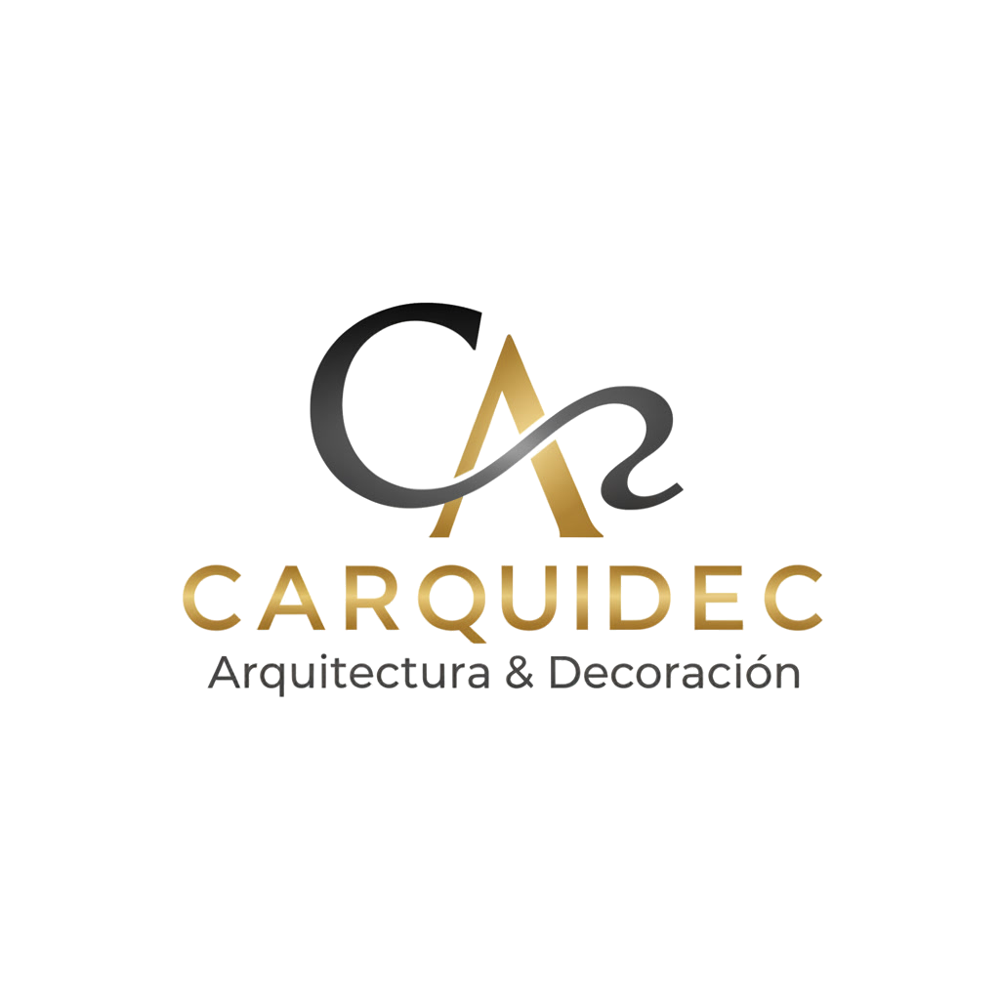

Arquitecto y constructor por vocacion. En 1988, con 24 anios y un titulo de la Universidad Autonoma del Caribe, ya sabia que la arquitectura no era solo construir: era crear experiencias con espacios.
En 1995, un viaje a Japan, Italia y Costa Rica cambio su perspectiva para siempre. Descubrio el paisajismo como arte independiente y la integracion perfecta entre agua, piedra y vegetacion. Estos viajes definieron su enfoque: arquitectura que dialoga con la naturaleza, no que la domina.
A partir de 2005, su trabajo cruzo el oceano. Proyectos en Espana e Italia fusionaron la arquitectura tropical colombiana con el diseno mediterraneo. Su primer hotel boutique en la Costa Brava marco el inicio de una etapa internacional que hoy abarca tres continentes.
En 2020, fundo CARQUIDEC con una mision clara: crear arquitectura que provoque emocion. No edificios, no casas, no hoteles. Experiencias espaciales que se sienten en el cuerpo y se recuerdan en la memoria. Cada proyecto es un compromiso personal para transformar los suenos de sus clientes en realidades que perduran en el tiempo.
Hoy, con 38 anios de experiencia, 60+ proyectos ejecutados y presencia en Colombia, Espana e Italia, Hernando sigue creando arquitectura que trasciende generaciones. Su enfoque combina el rigor tecnico con la sensibilidad artistica, la innovacion con la tradicion, lo local con lo global.
Esa imagen que tiene en la cabeza. Esa casa que imagina cuando cierra los ojos. Ese lugar donde todo seria perfecto. ¿Será que es solo una idea? ¿O es que alguien puede hacer que eso sea realidad?
— Hernando Carrillo, Arquitecto